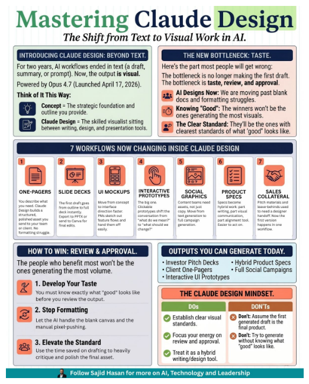

Mastering Claude Design
The Shift from Text to Visual Work in AI
7 Workflows Now Changing
1. One-Pagers
2. Slide Decks
3. UI Mockups
4. Prototypes
5. Social Graphics
6. Product Specs
7. Sales Collateral
For two years, AI workflows ended in text. Now, the output is visual.
💡
Concept = The strategic foundation you provide.
📝
Claude Design = The skilled visualist sitting between tools.
The bottleneck is no longer making the first draft. It is taste and review.
👥
AI Designs Now: Moving past blank docs.
⏱️
Knowing "Good": Clear standards win.